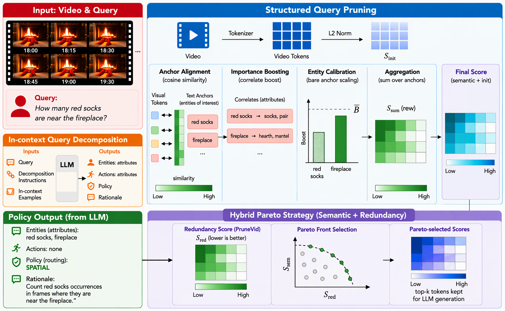

选取理由
近期回看，非当日新增。11月19日v1，本轮首次收录。共享骨干和预算的21种选择原则比较，直接检验查询相关性与视觉覆盖的权衡。它能指导P4对照设计，也能帮助P3避免只凭时序查询相似度删除短暂视觉前兆。须连同查询分解费用和基线简化范围一起读。
研究背景
由原简报的核心问题、选取理由和相关性整理，不替代原文背景综述。
视频模型的视觉Token使prefill与缓存变重，查询引导似乎可以专注答案区域，但原始问题文本与视觉证据的嵌入并不总可靠。本文固定视觉特征、保留预算和解码配置，比较无需查询、浅层查询、结构化查询及联合覆盖策略。其价值是剖析选择信号，不能视为全部原生剪枝系统的完整排行榜。
核心问题
在同等Token数量下，查询信息的表示方式是否比单纯可获得查询更关键。对稀疏短暂证据，选择器必须同时保留相关性与覆盖，但额外文本分解可能抵消推理收益。
对当前主题的关键意义在于：原始应用领域：视频多选问答。可迁移模块或训练目标：结构化查询锚点、覆盖与相关性联合选择。对应在研问题：P3时序条件视觉筛选与P4短暂证据保护的实验设计。预期计算和显存影响：压缩发生在密集视觉编码后，减少LLM开销但不免编码及分解成本。主要失效条件或数据风险：语义锚点幻觉、跨模态不对齐及成功解析子集偏差，因果预警不得使用未来问题信息。最小验证实验：一周内固定20%视觉预算，对比均匀覆盖、幅值、原始查询及结构化查询，测短暂前兆召回、误报、选择耗时和峰值显存。
方法与关键创新

原论文图示，方法结构或实验结果，具体配置及资源测量边界见正文与原图注。
在冻结Qwen3-VL-8B上执行语言模型之前的选择。先仅用文本将问题分解为实体、动作、属性锚点和空间/时间等策略，再融合视觉幅值与锚点相关性。Nested先筛唯一性再重排，Pareto联合优化相关性与覆盖。另在InternVL3-8B核验。保留数按32倍数取整，未实现被删Token的动态回收或原生Event保护。
阅读时需要把方法设计与主要结果一起看：表2 Qwen3-VL、LongVideoBench、10%保留，Structured55.5高于PruneVid50.6，但低于无需查询的IVC-Prune57.1。表3 Video-MME20%保留，Pareto65.0低于DyCoke66.9。表4五个宿主加入先验，三个改善两个退化，AdaReTaKe65.81到64.04。表7 Video-MME100样本20%预算，无剪枝21.40秒、40.72GB，Structured17.32秒、27.03GB，含3.06秒查询分解，无需查询PruneVid14.28秒。
实验结果
表2 Qwen3-VL、LongVideoBench、10%保留，Structured55.5高于PruneVid50.6，但低于无需查询的IVC-Prune57.1。表3 Video-MME20%保留，Pareto65.0低于DyCoke66.9。表4五个宿主加入先验，三个改善两个退化，AdaReTaKe65.81到64.04。表7 Video-MME100样本20%预算，无剪枝21.40秒、40.72GB，Structured17.32秒、27.03GB，含3.06秒查询分解，无需查询PruneVid14.28秒。
局限性
多种外部方法被简化为共同特征上的选择原则，删除合并、内部状态修改、训练等原组件，FastV等还使用代理信号，不能据此否定原版系统。全文部分分析改用0.6B分解器，表2与扩展结果用8B，不能跨表混成同一配置。MVBench部分分析只包含2706个成功解析样本，非全部2996。表7硬件与精度未形成足够明确的可复现实验配置，时延仅作作者报告。未确认专用代码或venue，未独立复现。
总结
保留视觉覆盖作为强基线，再测试结构化查询是否带来足够的证据召回，完整计入分解开销。
研究相关性与启发
原始应用领域：视频多选问答。可迁移模块或训练目标：结构化查询锚点、覆盖与相关性联合选择。对应在研问题：P3时序条件视觉筛选与P4短暂证据保护的实验设计。预期计算和显存影响：压缩发生在密集视觉编码后，减少LLM开销但不免编码及分解成本。主要失效条件或数据风险：语义锚点幻觉、跨模态不对齐及成功解析子集偏差，因果预警不得使用未来问题信息。最小验证实验：一周内固定20%视觉预算，对比均匀覆盖、幅值、原始查询及结构化查询，测短暂前兆召回、误报、选择耗时和峰值显存。